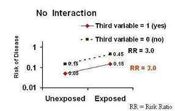
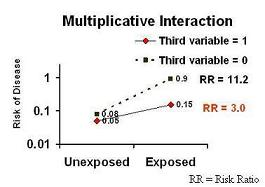
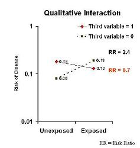

Graphical Approach to Interaction
Lead Author(s): Jeff Martin, MD
Many texts use a graphical approach to depict interaction.
To determine interactions we graphically look at the presence or absence of a third variable .
No Interaction
If you look at the graph below, you will see:
- Risk of Disease (in a log scale which remember is a multiplicative scale) on the y axis;
- Exposure status (Exposed vs Unexposed) is on the x axis.

Presence of the third variable:
- The line with the red diamonds (0.05 to 0.15) presents the data for persons who have the value of a third variable equal to present, yes, or 1.
In other words in the presence of a third variable, the risk of disease in the unexposed group is 0.05 and it goes up three fold to 0.15 in the exposed group.
Absence of the third variable:
- The line with the black squares (0.15 to 0.45) presents the data for persons who have the value of a third variable equal to absent, no, or 0.
In other words in the presence of a third variable, the risk of disease in the unexposed is 0.15 and it goes up three fold to 0.45 in the exposed group.
No interaction:
- The risk ratio does not change according to the third variable.
The lines are parallel. This means that there is not interaction in terms of the risk ratio.
Interaction
If you look at the graph below, you will see:
- Risk of Disease (in a log scale which remember is a multiplicative scale) on the y axis;
- Exposure status (Exposed vs Unexposed) is on the x axis.

Presence of the third variable:
- The line with the red diamonds (0.05 to 0.15) presents the data for persons who have the value of a third variable equal to present, yes, or 1.
In other words in the presence of a third variable, the risk of disease in the unexposed group is 0.05 and it goes up three fold to 0.15 in the exposed group.
Absence of the third variable:
- The line with the black squares (0.08 to 0.9) presents the data for persons who have the value of a third variable equal to absent, no, or 0.
In other words in the presence of a third variable, the risk of disease in the unexposed is 0.08 and it goes up 11.2 times to 0.9 in the exposed group.
Interaction:
- The risk ratio does change according to the third variable.
Non-parallel lines equal interaction. This means that there is an interaction in terms of the risk ratio.
Qualitative Interaction
If you look at the graph below, you will see:
- Risk of Disease (in a log scale which remember is a multiplicative scale) on the y axis;
- Exposure status (Exposed vs Unexposed) is on the x axis.

Presence of the third variable:
- The line with the red diamonds (0.18 to 0.13) presents the data for persons who have the value of a third variable equal to present, yes, or 1.
In other words in the presence of a third variable, the risk of disease in the unexposed group is 0.18 and it goes down to 0.13 in the exposed group. Exposed persons appear to be protected relative to exposed.
Absence of the third variable:
- The line with the black squares (0.08 to 0.19) presents the data for persons who have the value of a third variable equal to absent, no, or 0.
In other words in the presence of a third variable, the risk of disease in the unexposed is 0.08 and it goes up two fold two fold to 0.19 in the exposed group. We see this in the Stanton example of smoking, caffeince use, and delayed conception.
Interaction:
- The effects in the two levels of the third variable are on the opposite sides of 1.0.
This is what we call qualitative interaction. The interaction is huge!
- An example of qualitative interaction can be found in Stanton's Study of coffee use and delayed conception.